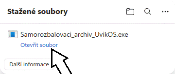
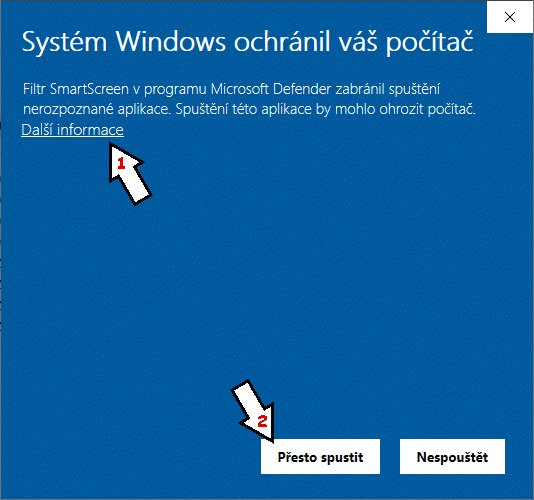
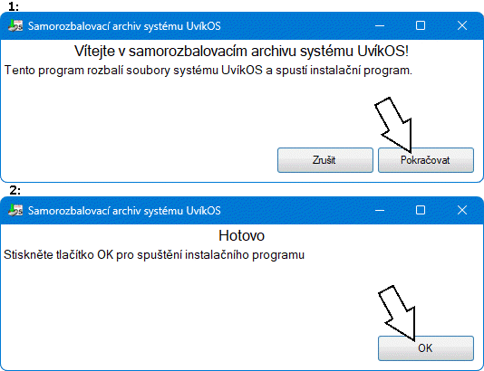

Jak stáhnout UvíkOS
 VAROVÁNÍ: Windows Defender může v některých případech samorozbalovací archiv UvíkOS nesprávně detekovat jako hrozbu. Pokud k tomu dojde, můžete soubor zkusit stáhnout znovu později.
VAROVÁNÍ: Windows Defender může v některých případech samorozbalovací archiv UvíkOS nesprávně detekovat jako hrozbu. Pokud k tomu dojde, můžete soubor zkusit stáhnout znovu později.
Pokud používáte Microsoft Edge, klikněte .
Nejprve si stáhněte Samorozbalovací archiv UvíkOS: Stáhnout.
Po stažení souboru jej otevřete.

Protože UvíkOS není často stahován a nemá digitální certifikát, SmartScreen může zobrazit varování. Pokud se toto varování zobrazí, klikněte na Další informace a poté na Přesto spustit.

Otevře se Samorozbalovací archiv UvíkOS. Pro rozbalení souborů potřebných pro UvíkOS klikněte na tlačítko Pokračovat. Poté vyčkejte, než program rozbalí potřebné soubory, a stiskněte tlačítko OK.

Program otevře instalační program systému UvíkOS. Pokud instalační program nevidíte, zkontrolujte hlavní panel (dolní lišta), nebo spusťte program „Nainstalovat UvíkOS“ v otevřené složce. Poté projděte instalačním programem systému UvíkOS.

Pokud chcete ušetřit místo na úložišti, můžete soubor „Spustit UvíkOS“ přesunout do jiné složky a poté smazat Samorozbalovací archiv UvíkOS (Samorozbalovaci_archiv_UvikOS.exe) i rozbalenou složku.